Patterns that deal with how classes interact and how responsibilities are assigned between objects are:
- Behavioral
- Creational
- Structural
- Architectural
Show answer
A. Behavioral
Design patterns are recurring solutions to object-oriented design problems in a given context, smaller in scale than architectural patterns. They are classified by purpose (creational, structural, behavioural) and by scope (class or object). Creational patterns control how objects are created. The first one, Abstract Factory, gives a client one interface for creating a whole family of related products (dark-theme widgets, advanced computer parts) without naming their concrete classes, so switching families means swapping one factory object.
Creational = creating objects; structural = composing structures; behavioural = interaction and responsibilities. Class scope = design time; object scope = run time.
Abstract Factory, Factory Method, Builder, Prototype, Singleton.
AbstractFactory (one create method per product), ConcreteFactory per family, AbstractProduct per product type, ConcreteProducts, and a Client that sees only the abstract types.
Adding a new family is easy (a new factory and products, OCP); adding a new kind of product touches every factory. Many classes.
Final 252 Q6 examined creational patterns through Builder and Singleton (Lectures 2–3). For Abstract Factory expect a design question: given a scenario with product families (themes, car brands, computer grades), name the pattern, draw the class diagram with factory and product interfaces, and explain how a new family is added.
Every original slide is shown unchanged. Yellow marks on a slide point to a numbered note: hover or tap a mark to jump to its note, and hover a note to see its marks. Questions tagged Past exam appeared on a real paper; Prediction questions are likely angles, not confirmed.
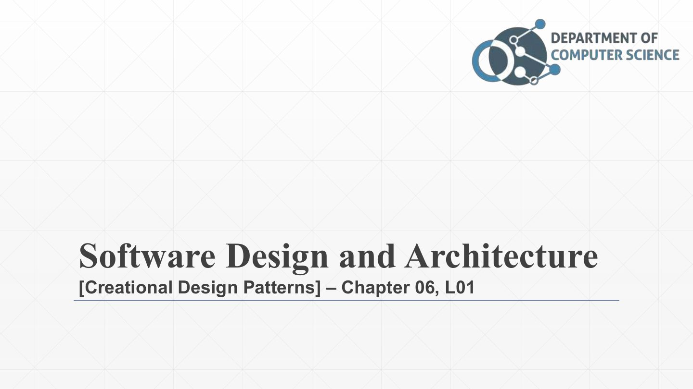
Chapter 6 starts design patterns, the detailed-design counterpart of Chapter 4’s architectural patterns. This lecture: what design patterns are, how they are classified, and the first creational pattern, Abstract Factory.
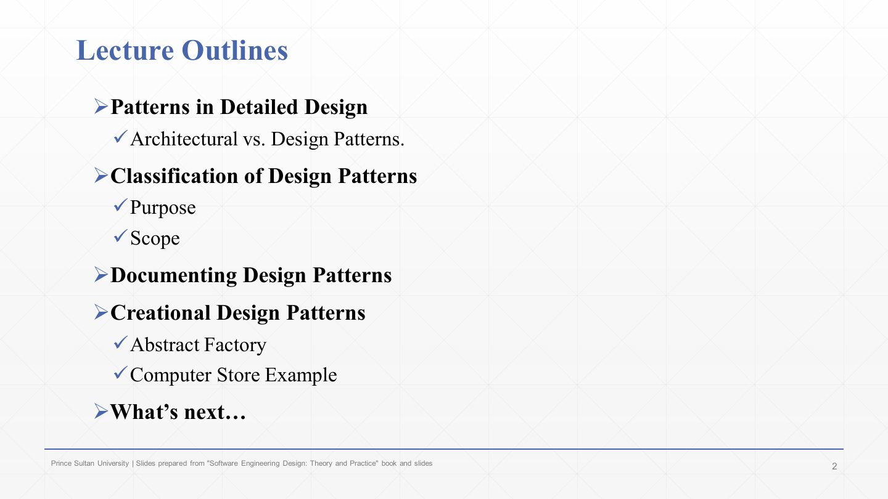
First, how design patterns differ from architectural patterns.
Then how they are classified (purpose and scope) and documented.
Then the creational patterns, starting with Abstract Factory and its computer-store example.
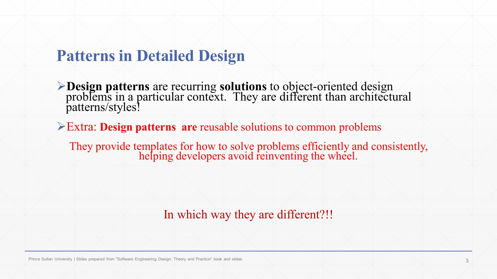
Design patterns are recurring solutions to object-oriented design problems in a particular context. They give templates that solve problems efficiently and consistently, so developers don’t reinvent the wheel.
They are different from architectural patterns (Chapter 4, slide 11 of Lecture 1): architectural patterns fix the system-wide structure; design patterns work at the level of classes and objects inside a subsystem and don’t change the overall structure.
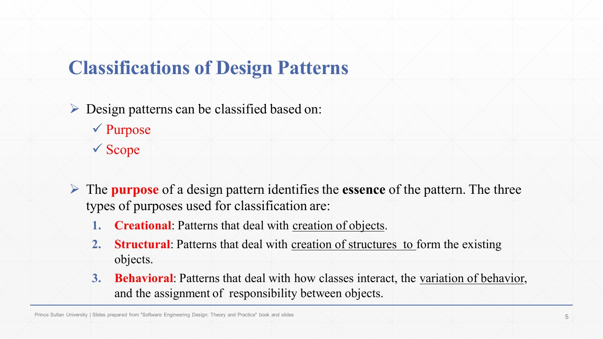
Patterns are classified by purpose (what kind of problem they solve) and scope (next slide).
Creational: deal with the creation of objects (this chapter).
Structural: deal with composing objects and classes into larger structures (Chapter 7: Adapter, Composite…).
Behavioural: deal with how classes interact, how behaviour varies, and how responsibilities are assigned between objects (Chapter 7: Observer…).
Patterns that deal with how classes interact and how responsibilities are assigned between objects are:
A. Behavioral
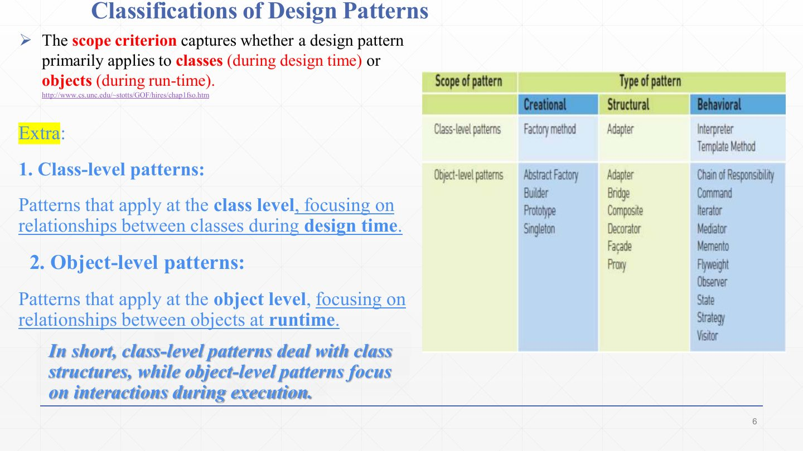
The scope criterion says whether a pattern applies mainly to classes or to objects.
Class-level patterns deal with relationships between classes, fixed at design time through inheritance. Examples in the table: Factory Method (creational), Adapter (structural), Interpreter and Template Method (behavioural).
Object-level patterns deal with relationships between objects, set up at run time through composition. Most patterns are here: Abstract Factory, Builder, Prototype, Singleton (creational); Adapter, Bridge, Composite, Decorator, Façade, Proxy (structural); Chain of Responsibility, Command, Iterator, Mediator, Memento, Flyweight, Observer, State, Strategy, Visitor (behavioural).
Classify Abstract Factory, Composite and Observer by purpose and scope.
Abstract Factory: creational, object scope. Composite: structural, object scope. Observer: behavioural, object scope.
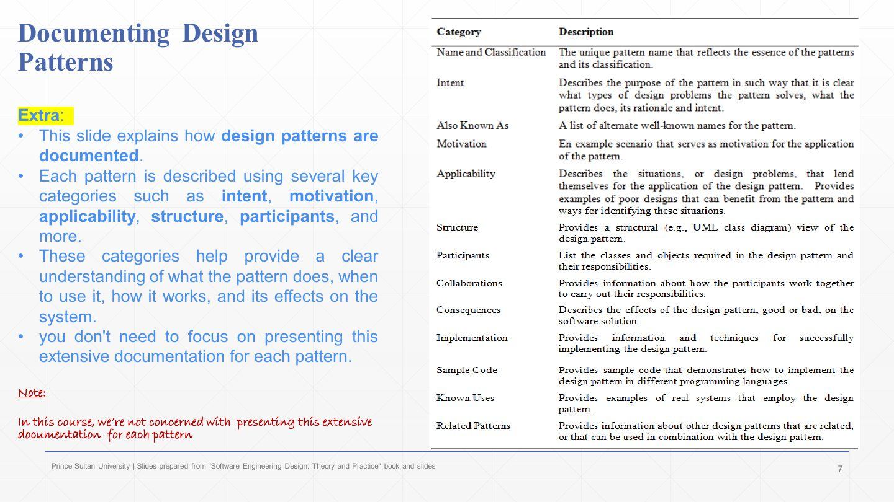
Each pattern is documented with the same categories, so patterns can be compared and looked up.
The categories: name and classification, intent (what problem it solves), also known as, motivation (an example scenario), applicability (when to use it), structure (UML class diagram), participants, collaborations, consequences (good and bad effects), implementation, sample code, known uses, related patterns.
Note on the slide: this course is not concerned with presenting the full documentation for each pattern; focus on intent, structure and participants.
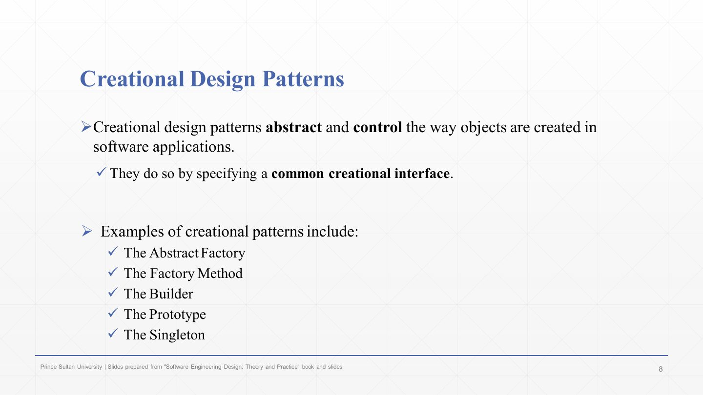
Creational patterns abstract and control how objects are created, by giving clients a common creational interface instead of scattered new ConcreteClass() calls.
The five: Abstract Factory, Factory Method, Builder, Prototype, Singleton. This chapter covers Abstract Factory, Factory Method, Builder and Singleton.
Which of these is NOT a creational pattern?
A. Composite
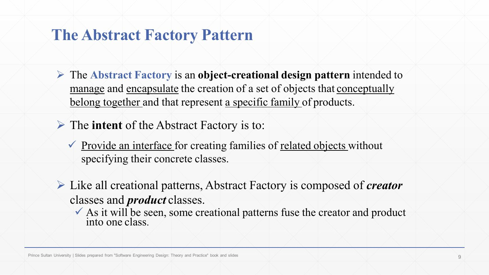
The Abstract Factory is an object-creational pattern that manages and encapsulates the creation of a set of objects that belong together: a family of products.
Its intent: provide an interface for creating families of related objects without specifying their concrete classes.
Like all creational patterns it has creator classes (the factories) and product classes. (Some creational patterns, such as Singleton, fuse creator and product into one class.)
What is the intent of the Abstract Factory pattern?
A. Provide an interface for creating families of related objects without specifying their concrete classes
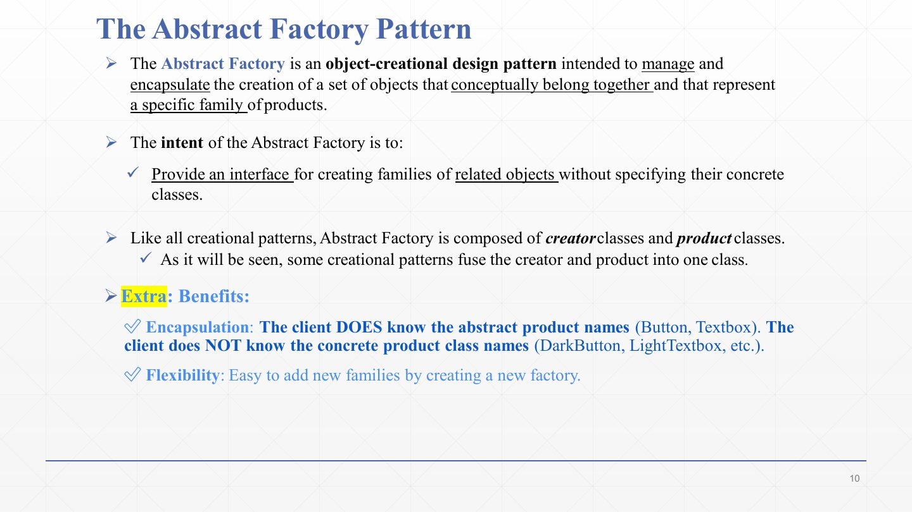
The same definition, plus the two benefits. Encapsulation: the client knows the abstract product names (Button, Textbox) but not the concrete classes (DarkButton, LightTextbox).
Flexibility: a new family is added by creating a new factory, without changing the client.
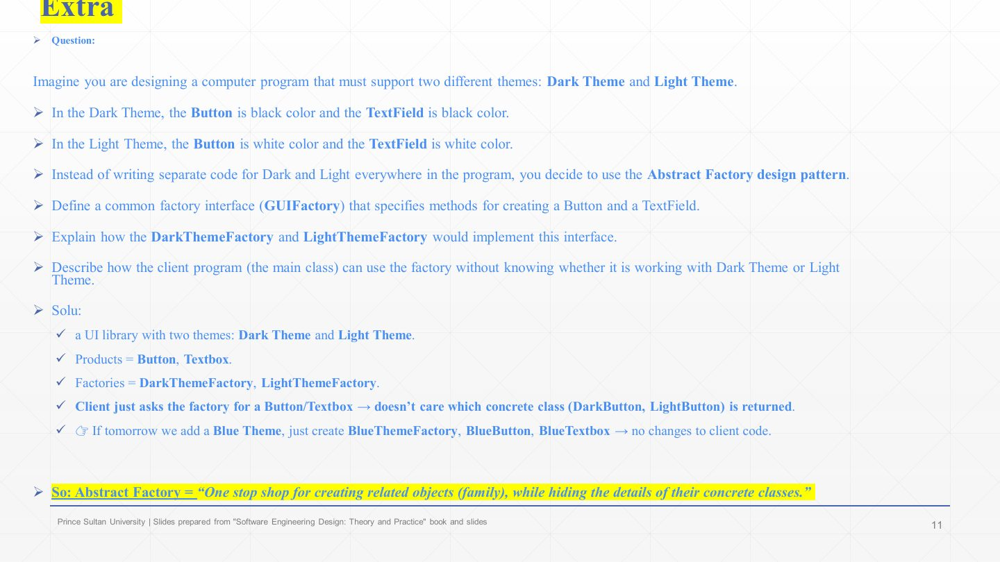
The exercise: a program with a Dark theme (black button and text field) and a Light theme (white ones). Instead of if (dark) checks everywhere, use Abstract Factory.
The factory interface GUIFactory declares createButton() and createTextField().
DarkThemeFactory returns a DarkButton and DarkTextField; LightThemeFactory returns the light versions. The client asks its factory for a Button and a TextField and never knows which concrete class came back.
Adding a Blue theme means adding BlueThemeFactory, BlueButton and BlueTextbox, with no change to the client. In one line: Abstract Factory is a “one-stop shop” for creating a related family of objects while hiding their concrete classes.
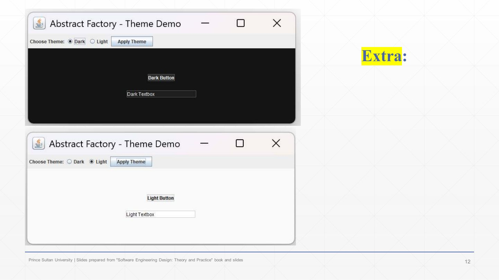
The theme example running. Choosing Dark and pressing Apply Theme swaps in the DarkThemeFactory, and the window shows a dark button and text box; choosing Light swaps in the LightThemeFactory. The client code that builds the window is identical in both cases; only the factory object changed.
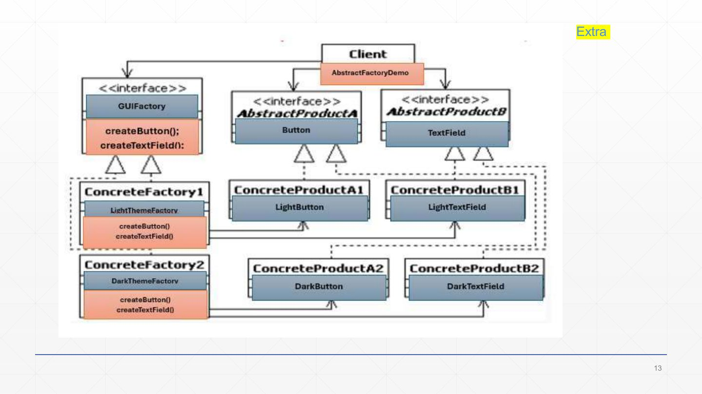
The class diagram mapped onto the pattern’s role names. «interface» GUIFactory (AbstractFactory) declares createButton() and createTextField().
«interface» Button (AbstractProductA) and TextField (AbstractProductB) are the product types the client uses.
LightThemeFactory (ConcreteFactory1) creates LightButton and LightTextField (ConcreteProductA1/B1); DarkThemeFactory (ConcreteFactory2) creates DarkButton and DarkTextField (A2/B2). The hollow triangles are realizations; the arrows from factories to products show what each creates.
The Client (AbstractFactoryDemo) depends only on the three interfaces.
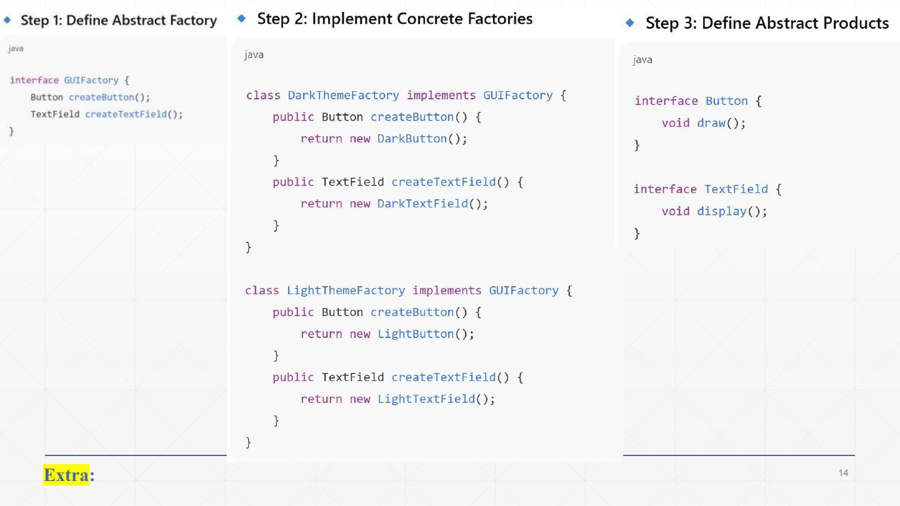
The code, steps 1–3:
| Code | What it does |
|---|---|
interface GUIFactory { Button createButton(); TextField createTextField(); } | Step 1: the abstract factory, one create method per product type. |
class DarkThemeFactory implements GUIFactory { | Step 2: a concrete factory for the dark family… |
public Button createButton() { return new DarkButton(); } | …returns the dark button, typed as the abstract Button. |
public TextField createTextField() { return new DarkTextField(); } } | …and the matching dark text field. |
class LightThemeFactory implements GUIFactory { … new LightButton() … new LightTextField() … } | The light family, same shape. |
interface Button { void draw(); } | Step 3: the abstract products. |
interface TextField { void display(); } |
The only place new DarkButton() appears is inside DarkThemeFactory. That is the point of the pattern.
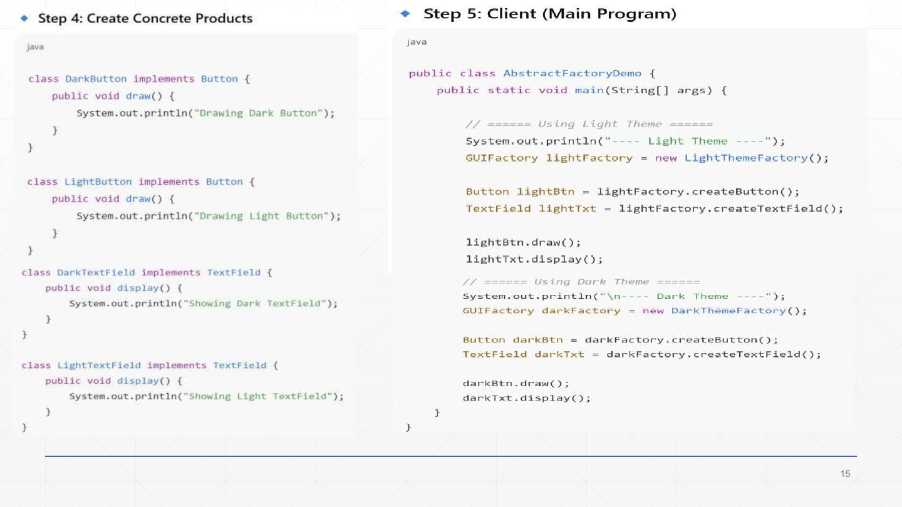
Steps 4–5:
| Code | What it does |
|---|---|
class DarkButton implements Button { public void draw() { …"Drawing Dark Button"… } } | Step 4: concrete products, one per family per product type. |
class LightTextField implements TextField { public void display() { …"Showing Light TextField"… } } | (LightButton and DarkTextField are written the same way.) |
GUIFactory lightFactory = new LightThemeFactory(); | Step 5, the client: pick a family once… |
Button lightBtn = lightFactory.createButton(); TextField lightTxt = lightFactory.createTextField(); | …ask that factory for the parts, typed as abstract products… |
lightBtn.draw(); lightTxt.display(); | …and use them. Prints “Drawing Light Button”, “Showing Light TextField”. |
GUIFactory darkFactory = new DarkThemeFactory(); … darkBtn.draw(); darkTxt.display(); | The dark run is the same code with a different factory. |
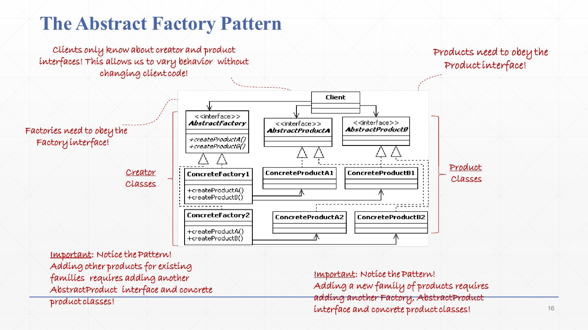
The general structure. Clients only know the creator and product interfaces, so behaviour can vary without changing client code.
Every factory must obey the Factory interface (AbstractFactory with createProductA(), createProductB()), and every product its Product interface.
Creator classes on the left (ConcreteFactory1, ConcreteFactory2); product classes on the right (ConcreteProductA1, B1, A2, B2). Each concrete factory creates exactly one family: factory 1 → A1 and B1; factory 2 → A2 and B2.
Name the participants of the Abstract Factory pattern.
AbstractFactory (interface with one create method per product), ConcreteFactory (one per family), AbstractProduct (one interface per product type), ConcreteProduct (one class per family per product), and Client (uses only AbstractFactory and AbstractProduct).
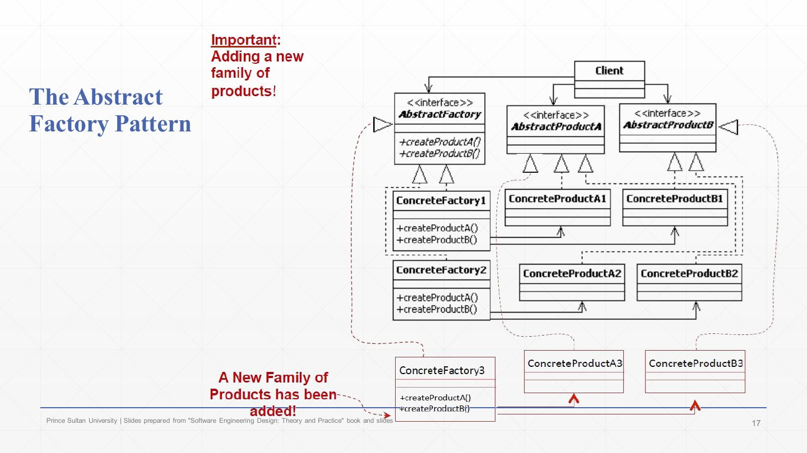
Adding a new family (the red parts): add ConcreteFactory3, which implements the existing AbstractFactory, plus ConcreteProductA3 and B3, which implement the existing product interfaces.
No existing class changes: the system is extended, not modified. This is the Open-Closed Principle in action, and the case Abstract Factory handles best.
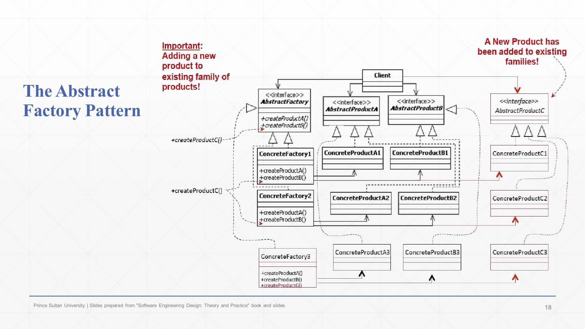
Adding a new product to the existing families is harder: add «interface» AbstractProductC and a concrete C product for every family (C1, C2, C3)…
…and add createProductC() to the AbstractFactory interface and therefore to every concrete factory. Existing classes must change, which is the pattern’s main weakness.
Why is adding a new product type harder than adding a new family in Abstract Factory?
A new family only needs a new concrete factory and new concrete products, with no change to existing code. A new product type needs a new create method in the AbstractFactory interface, so every existing concrete factory must be modified (plus a new abstract product and one concrete product per family).
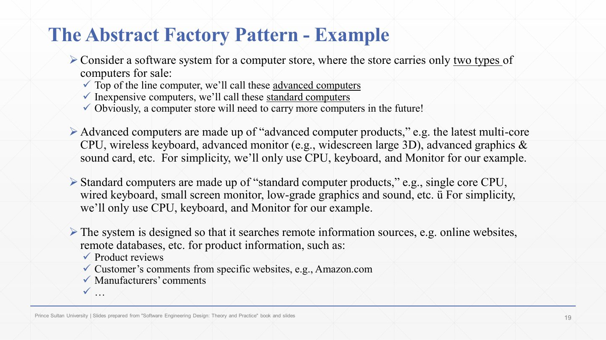
The textbook example: a computer store that sells two grades of computer, advanced (top of the line) and standard (inexpensive). More grades will come.
Each computer is made of products from its own grade: an advanced CPU, keyboard and monitor, or standard ones. The example uses only CPU, keyboard and monitor.
For each product the system looks up information (reviews, customer comments, manufacturer notes) from remote sources, and each grade’s products come from different sources. So “advanced” and “standard” are product families.
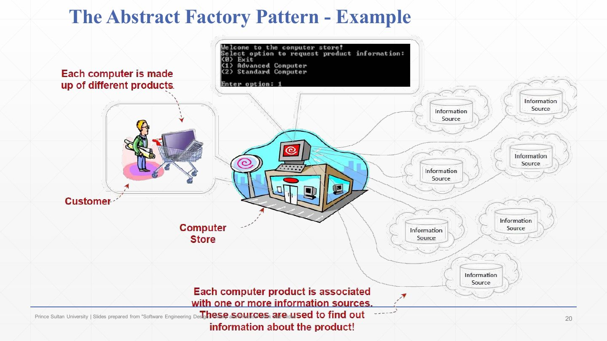
The store as a picture: a customer chooses an advanced or standard computer from the console menu (1 Advanced, 2 Standard).
The computer store system builds that computer from its products.
Each product is associated with one or more information sources, which are used to find out information about the product.
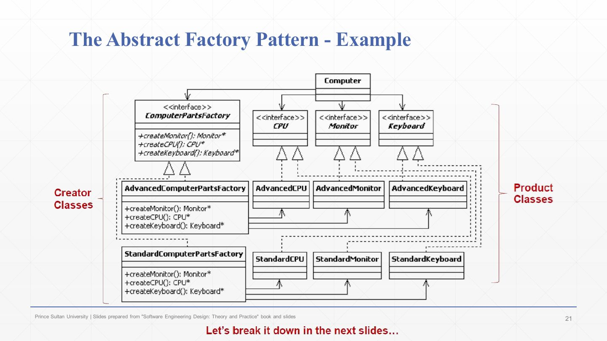
The example’s class diagram. «interface» ComputerPartsFactory declares createMonitor(), createCPU() and createKeyboard().
AdvancedComputerPartsFactory creates AdvancedCPU, AdvancedMonitor and AdvancedKeyboard; StandardComputerPartsFactory creates the standard ones.
«interface» CPU, Monitor and Keyboard are the abstract products; Computer is the client and uses only the interfaces. Creator classes on the left, product classes on the right, exactly the general structure of slide 15.
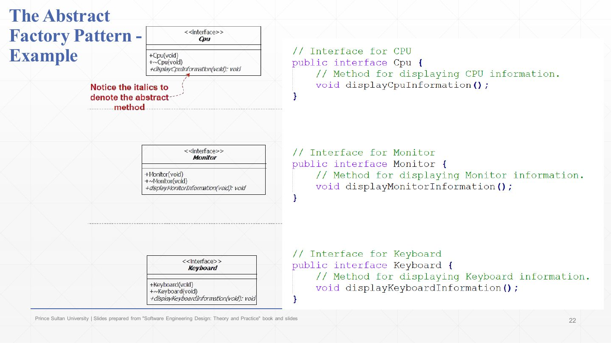
Step 1 of the example: the product interfaces.
| Code | What it does |
|---|---|
public interface Cpu { void displayCpuInformation(); } | Every CPU, of any grade, can display its information. |
public interface Monitor { void displayMonitorInformation(); } | The monitor contract. |
public interface Keyboard { void displayKeyboardInformation(); } | The keyboard contract. |
In the UML on the left the method names are in italics: in UML, italics mark abstract operations (no body).
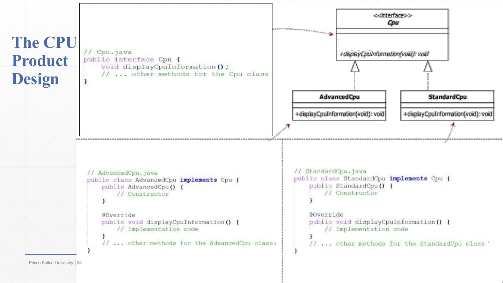
The CPU product design: «interface» Cpu with the abstract displayCpuInformation(), realised by AdvancedCpu and StandardCpu.
The code:
| Code | What it does |
|---|---|
public class AdvancedCpu implements Cpu { | The advanced family’s CPU. |
public AdvancedCpu() { /* Constructor */ } | |
@Override public void displayCpuInformation() { /* Implementation code */ } } | Its own way of displaying information. |
public class StandardCpu implements Cpu { … @Override public void displayCpuInformation() { … } } | The standard family’s CPU, same contract. |
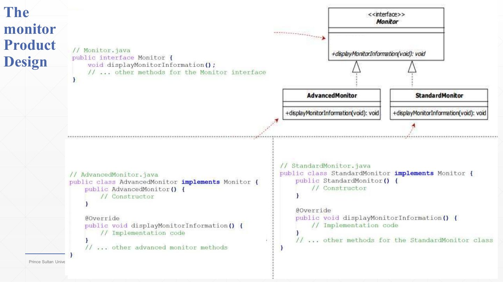
The monitor product design follows the same shape: «interface» Monitor with displayMonitorInformation(), realised by AdvancedMonitor and StandardMonitor, each with a constructor and an @Override of the display method.
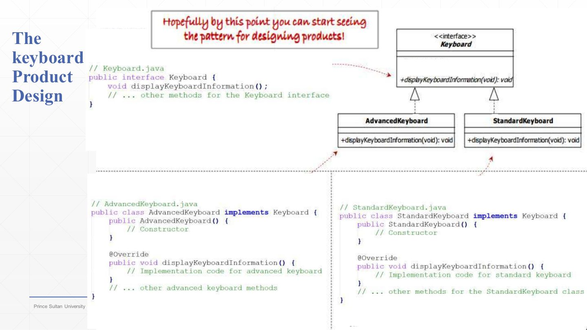
The keyboard product design: «interface» Keyboard, realised by AdvancedKeyboard and StandardKeyboard.
As the callout says, the pattern for designing products should now be visible: one interface per product type, one concrete class per family.
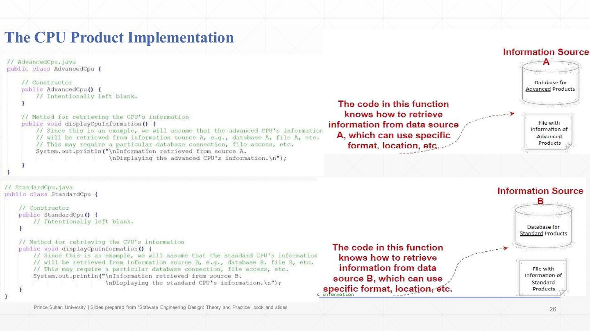
The CPU implementations:
| Code | What it does |
|---|---|
public class AdvancedCpu { public AdvancedCpu() { } … | Constructor intentionally left blank. |
public void displayCpuInformation() { … System.out.println("\nInformation retrieved from source A.\nDisplaying the advanced CPU’s information.\n"); } | The advanced CPU gets its data from information source A (database A, file A…). |
public class StandardCpu { … displayCpuInformation() { … "retrieved from source B" … } } | The standard CPU gets its data from source B. |
Each concrete product knows how to reach its own source (connection, format, location). The client never sees this: it just calls displayCpuInformation().
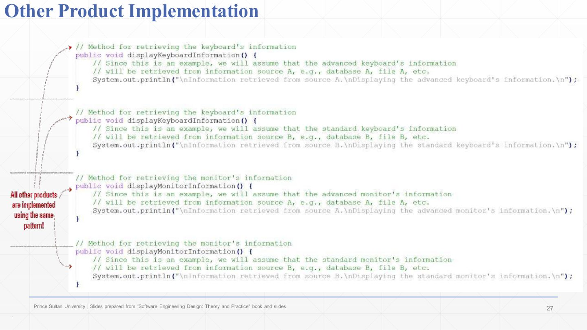
The keyboards and monitors are implemented the same way: advanced products print “Information retrieved from source A”, standard products “source B”, each followed by its own display text.
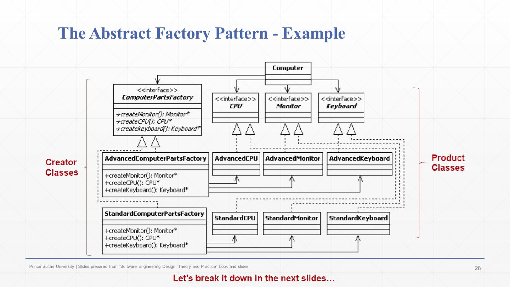
The example class diagram again (same as slide 20) before the factories are built: the creator classes are next.
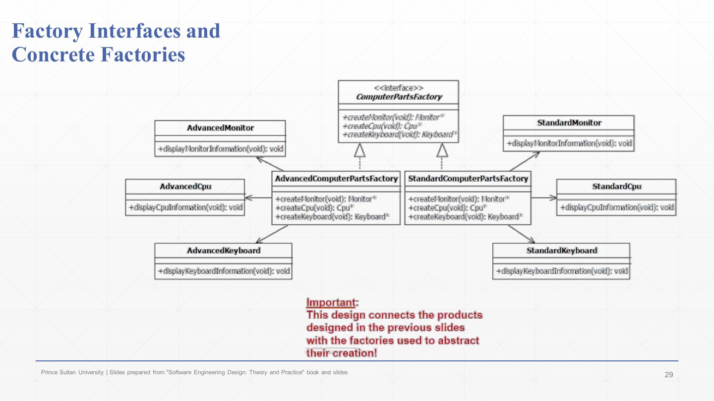
The factories in detail: «interface» ComputerPartsFactory with createMonitor(), createCpu(), createKeyboard().
AdvancedComputerPartsFactory is connected to AdvancedMonitor, AdvancedCpu and AdvancedKeyboard; StandardComputerPartsFactory to the standard three. This design connects the products from the previous slides to the factories that abstract their creation.
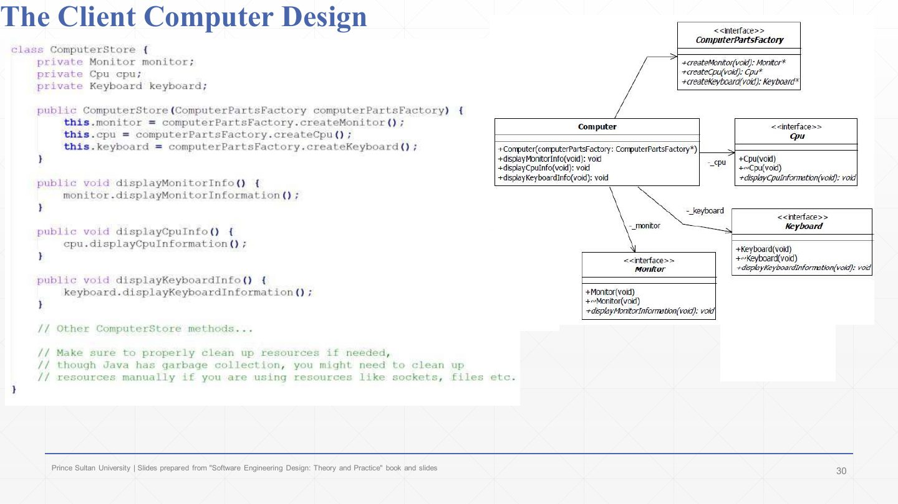
The client:
| Code | What it does |
|---|---|
class ComputerStore { private Monitor monitor; private Cpu cpu; private Keyboard keyboard; | Its fields are abstract product types only. |
public ComputerStore(ComputerPartsFactory computerPartsFactory) { | The factory is passed in: the store never chooses the family itself. |
this.monitor = computerPartsFactory.createMonitor(); | Ask the factory for each part… |
this.cpu = computerPartsFactory.createCpu(); this.keyboard = computerPartsFactory.createKeyboard(); } | …all from the same family, so they always match. |
public void displayMonitorInfo() { monitor.displayMonitorInformation(); } | Using a part: a call on the interface. |
… displayCpuInfo(), displayKeyboardInfo() … |
In the UML the client (Computer) depends on ComputerPartsFactory and on the Cpu, Monitor and Keyboard interfaces, and on nothing concrete.
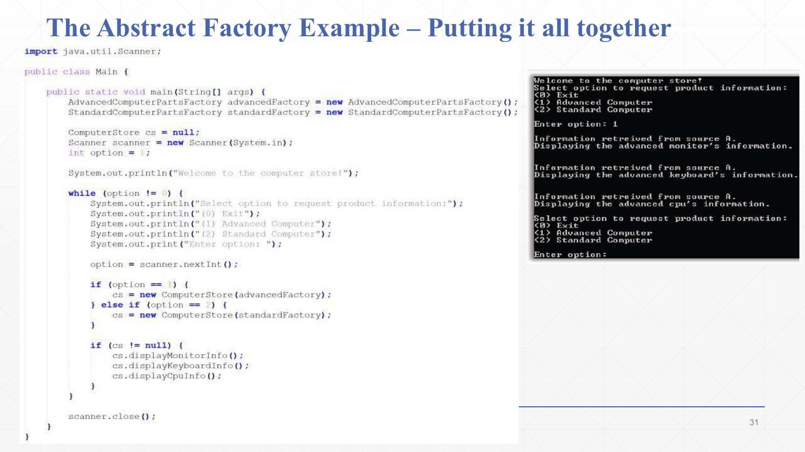
The main program:
| Code | What it does |
|---|---|
AdvancedComputerPartsFactory advancedFactory = new AdvancedComputerPartsFactory(); | Create one factory per family (the only place concrete factories are named). |
StandardComputerPartsFactory standardFactory = new StandardComputerPartsFactory(); | |
while (option != 0) { … option = scanner.nextInt(); | Menu: 0 Exit, 1 Advanced, 2 Standard. |
if (option == 1) cs = new ComputerStore(advancedFactory); | Choosing the family = choosing the factory. |
else if (option == 2) cs = new ComputerStore(standardFactory); | |
if (cs != null) { cs.displayMonitorInfo(); cs.displayKeyboardInfo(); cs.displayCpuInfo(); } } | The same calls for either family. |
The console on the right shows option 1: every line says “retrieved from source A”, so all parts came from the advanced family.
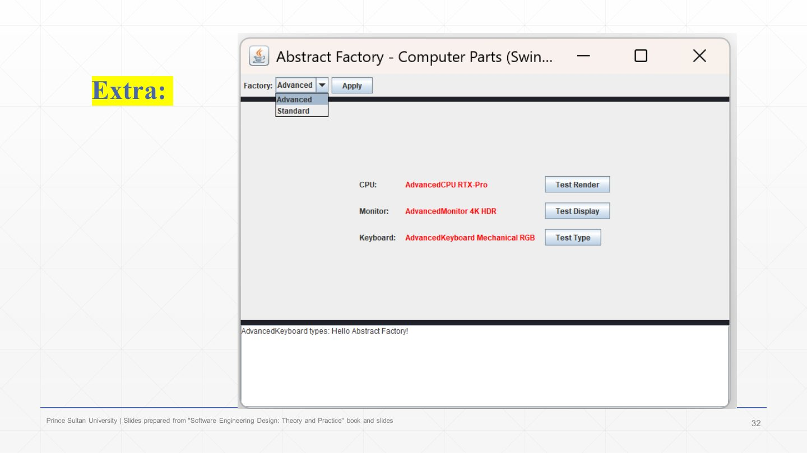
A Swing version of the example: picking Advanced or Standard in the Factory menu and pressing Apply swaps the factory, and the CPU, monitor and keyboard shown (AdvancedCPU RTX-Pro, AdvancedMonitor 4K HDR, AdvancedKeyboard Mechanical RGB) all switch family together.
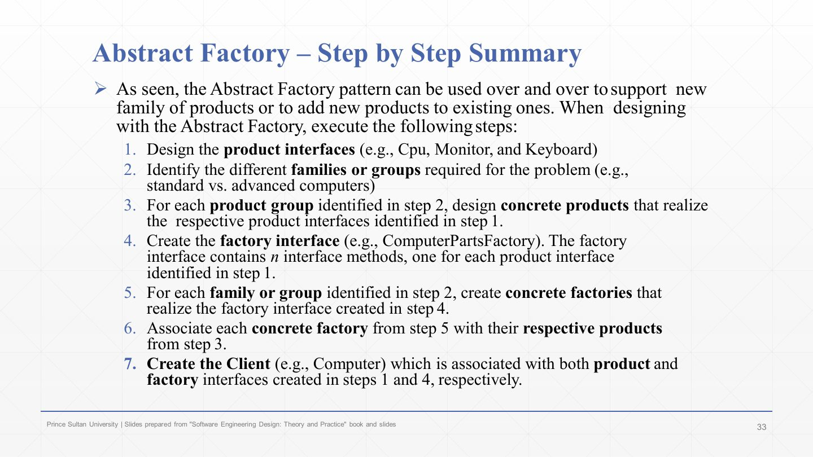
Steps 1–3: design the product interfaces (Cpu, Monitor, Keyboard); identify the families (standard, advanced); for each family, design concrete products that realise the interfaces.
Steps 4–6: create the factory interface with one method per product interface (ComputerPartsFactory); create one concrete factory per family; associate each concrete factory with its family’s products.
Step 7: create the client (Computer), associated with both the product interfaces and the factory interface.
This recipe is the model answer to “apply Abstract Factory to …” questions: name the product interfaces, the families, the factory interface and the concrete factories, then draw them.
Apply the Abstract Factory pattern to a furniture shop that sells Modern and Victorian sets, each with a Chair and a Sofa. Name all classes and interfaces.
Product interfaces: Chair, Sofa. Families: Modern, Victorian. Concrete products: ModernChair, ModernSofa, VictorianChair, VictorianSofa. Factory interface: FurnitureFactory with createChair(), createSofa(). Concrete factories: ModernFurnitureFactory, VictorianFurnitureFactory, each creating its own family. Client: Shop, which holds a FurnitureFactory and uses only Chair and Sofa.
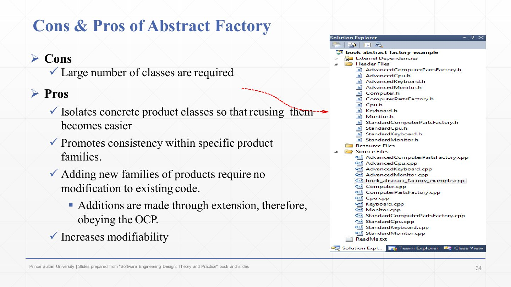
Con: a large number of classes (an interface per product, a class per product per family, a factory per family).
Pros: concrete product classes are isolated, so they are easier to reuse; products within a family are guaranteed consistent; adding a new family needs no change to existing code, because additions are made by extension (OCP); modifiability increases. (The hidden con from slide 17: adding a new product type changes every factory.)
Give one disadvantage and two advantages of the Abstract Factory pattern.
Disadvantage: many classes (and adding a new product type requires changing every factory). Advantages: concrete classes are isolated from the client; products of a family are always consistent; new families are added by extension without modifying existing code (OCP), increasing modifiability.
The seven-step summary repeated (see slide 32).
The pros and cons repeated (see slide 33).
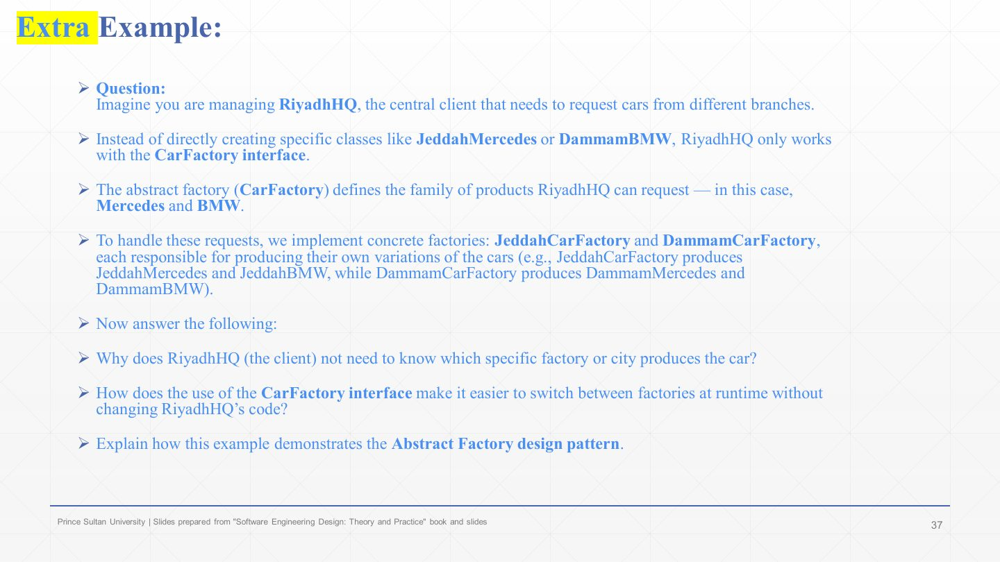
An exercise: RiyadhHQ is the client that requests cars from different branches, without creating JeddahMercedes or DammamBMW itself.
CarFactory is the abstract factory: it defines the products RiyadhHQ can request, a Mercedes and a BMW.
JeddahCarFactory makes JeddahMercedes and JeddahBMW; DammamCarFactory makes DammamMercedes and DammamBMW. Each city is a family.
The questions: RiyadhHQ doesn’t need to know the city because it only uses CarFactory, Mercedes and BMW; switching factories at run time is just passing a different CarFactory object; and the example shows Abstract Factory because each concrete factory creates a consistent family of related products behind one interface.
Why does RiyadhHQ not need to know which branch produced its cars, and how does it switch branches?
It depends only on the CarFactory interface and the abstract Mercedes and BMW types, so the concrete classes stay hidden in the branch factories. Switching branches means giving RiyadhHQ a different CarFactory object (JeddahCarFactory or DammamCarFactory) at run time; its own code does not change.
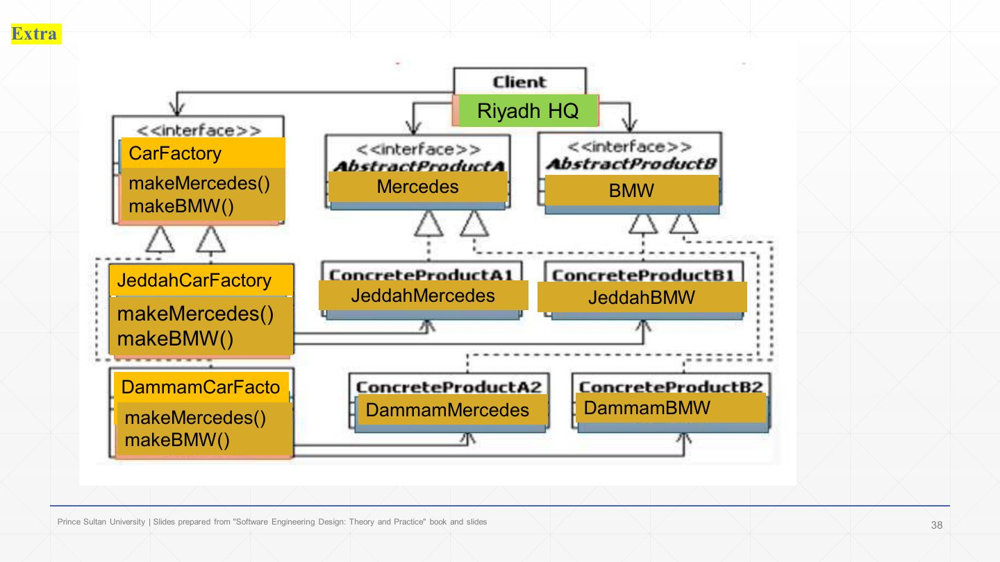
The model diagram: «interface» CarFactory with makeMercedes() and makeBMW(); JeddahCarFactory and DammamCarFactory implement it.
Client Riyadh HQ uses CarFactory and the abstract products Mercedes and BMW; JeddahMercedes/DammamMercedes and JeddahBMW/DammamBMW are the concrete products, each created by its own city’s factory.
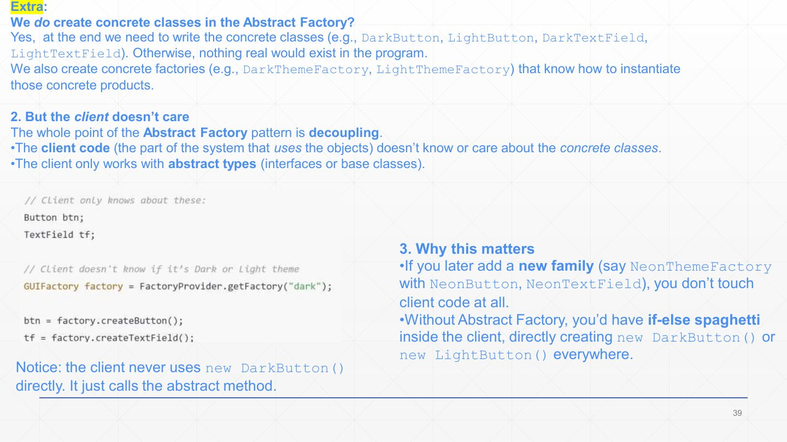
Yes, concrete classes are still written (DarkButton, LightTextField…), and concrete factories that instantiate them. Otherwise nothing real would exist.
But the client doesn’t care: the point of the pattern is decoupling. Client code works only with abstract types (Button btn; GUIFactory factory = FactoryProvider.getFactory("dark"); btn = factory.createButton();) and never writes new DarkButton().
Why it matters: a new NeonThemeFactory with NeonButton and NeonTextField needs no client change. Without the pattern you get if-else “spaghetti” creating new DarkButton() or new LightButton() all over the client.
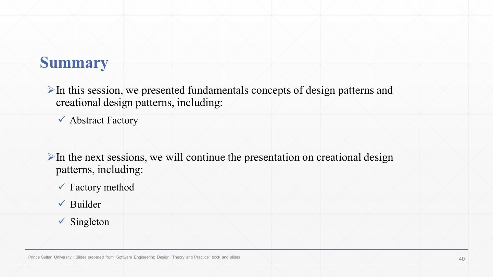
This lecture: design-pattern basics and the Abstract Factory.
Next: the other creational patterns, Factory Method, Builder and Singleton.